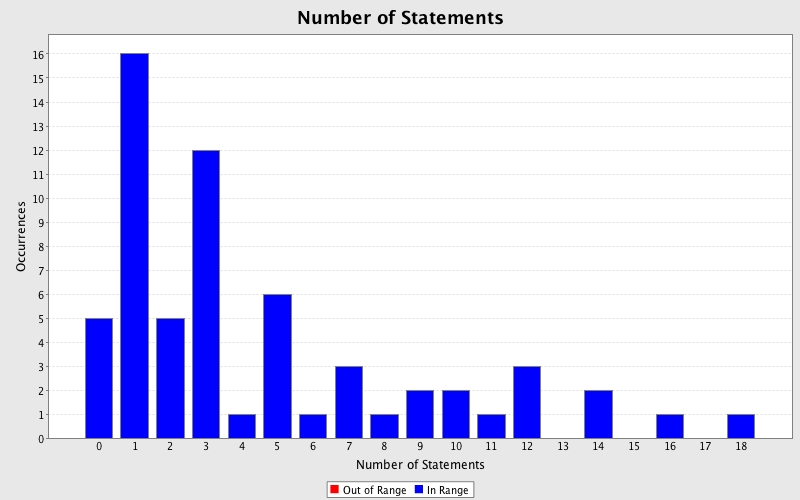

Produced by State Of Flow Eclipse Metrics on Wed Sep 03 13:59:02 EDT 2014
|  |
|
| CC (max) |
FE (max) |
LOCm (max) |
NLS (max) |
NOL (max) |
NOP (max) |
NOS (max) |
Ce (max) |
LCOM-CK (max) |
LCOM-HS % (max) |
LCOM-PFI % (max) |
LCOM-TC % (max) |
NOF (max) |
WMC (max) |
Package |
|---|---|---|---|---|---|---|---|---|---|---|---|---|---|---|
| 3 | 4 | 41 | 0 | 2 | 5 | 18 | 7 | 1 | 100 | 67 | 200 | 5 | 14 | com.teksystems.eag |
Produced by State Of Flow Eclipse Metrics on Wed Sep 03 13:59:02 EDT 2014